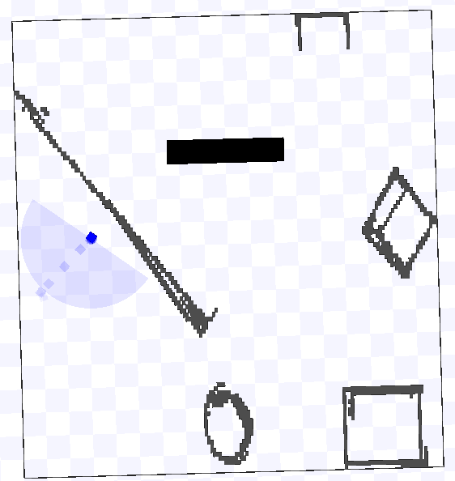
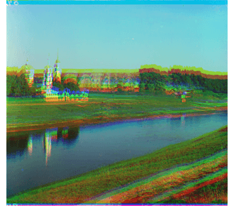

Projects

Path Planning using A* Algorithm in ROS
The objective of this assignment is to find the shortest route from a default start point to a default goal.
View Project

Laser-Based Perception and Navigation with Obstacle Avoidance
ROS Bug2 implementation to move a bot from origin to destination without any external intervention.
View Project

Colorizing the Prokudin-Gorskii photo collection
The goal of this assignment is to learn to work with images in Python by taking the digitized Prokudin-Gorskii glass plate images and automatically producing a color image with as few visual artifacts as possible.
View Project